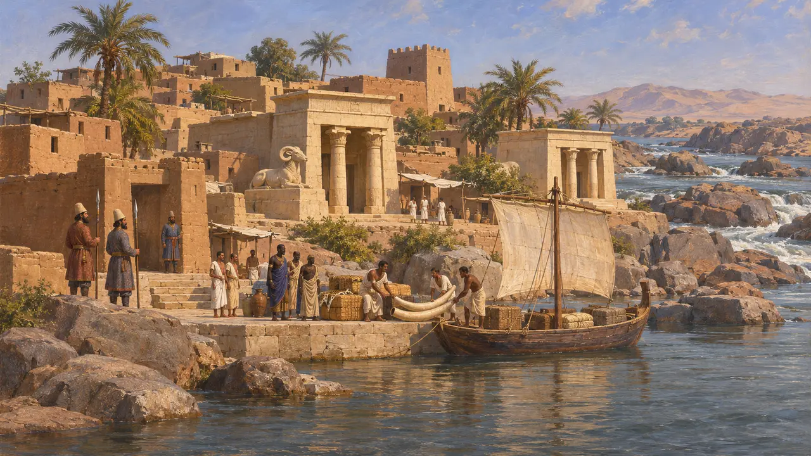
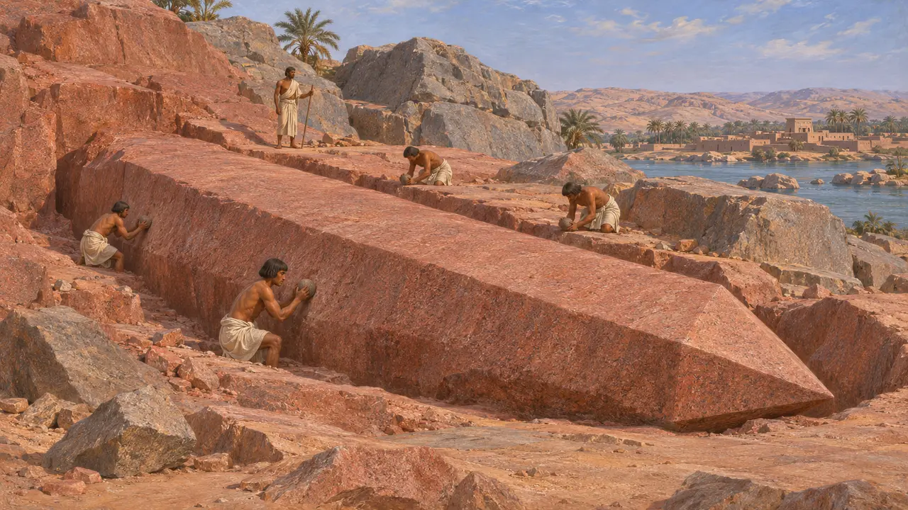
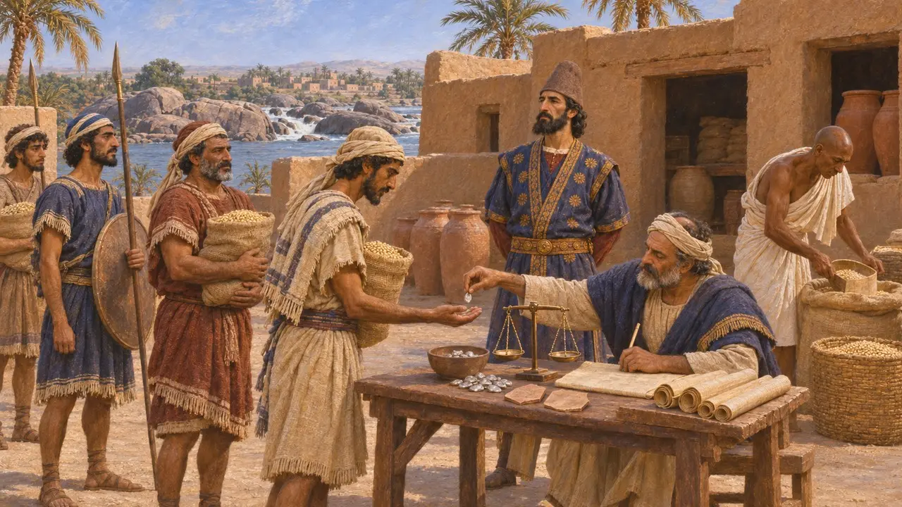
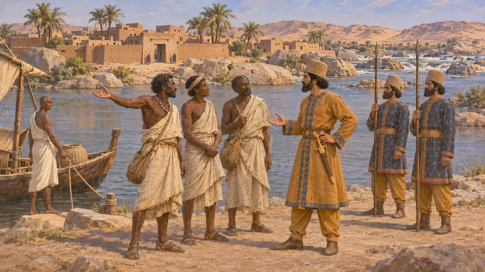
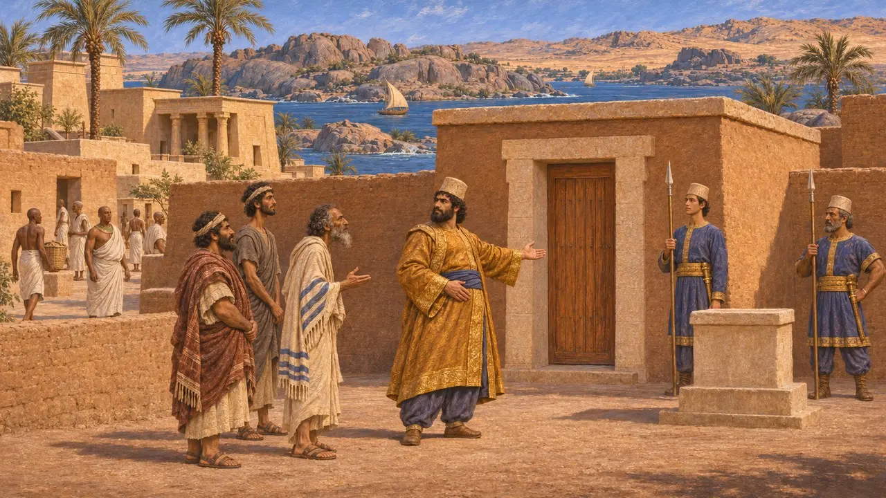

Elephantine
Inselstadt und Garnison am Ersten Nilkatarakt, Ägypten, 6.–5. Jahrhundert v. Chr.
Im Spiel: Level 2: Der Lanzenträger, Level 3: Die Lüge
Elephantine ist eine Nilinsel am Ersten Katarakt, gegenüber dem heutigen Assuan, wo Ägypten an Nubien grenzte. Sie war Grenzstadt, Tempelzentrum und Handelsplatz für Waren aus dem Süden. Unter persischer Herrschaft lag dort eine Garnison judäischer und aramäischer Soldaten, deren aramäische Schriftstücke einen der unmittelbarsten Einblicke in den Alltag im gesamten Reich gewähren.
Im Spiel: Das Spiel nennt Elephantine als Handelspartner, die Steinbrecher von Elephantine. Tatsächlich lagen die Granitbrüche überwiegend am Ostufer bei Syene, und unter den Persern war die Insel eher als Garnisonsposten bekannt.

Eine Grenzinsel am Katarakt
Zeitgenössisch belegtAusgrabungen zeigen, dass die Insel, von den Ägyptern Abu und auf Aramäisch Jeb genannt, schon weit über zweitausend Jahre vor der Ankunft der Perser besiedelt war. Hier standen Tempel des Chnum, des widderköpfigen Gottes des Katarakts, und der Göttin Satet. Ihre Lage machte sie zum südlichen Tor Ägyptens, durch das der Flussverkehr, Elfenbein und andere Güter aus Nubien nach Norden gelangten.
German Archaeological Institute, Elephantine excavation reports

Granit von jenseits des Flusses
Zeitgenössisch belegtDer rote und graue Granit der Kataraktregion wurde hauptsächlich am Ostufer um Syene, das heutige Assuan, gebrochen, nicht auf Elephantine selbst. Ägyptische Herrscher bezogen aus diesen Brüchen seit früher Zeit Stein für Obelisken, Statuen und Schreine, und ein unvollendeter Obelisk liegt noch heute in einer der Gruben. Elephantine war der Hauptort der südlichsten Provinz Ägyptens, sodass die Steinbrüche in seinem Bezirk lagen.
R. Klemm and D. Klemm, Stones and Quarries in Ancient Egypt, 2008

Die Garnison und ihre Papiere
Zeitgenössisch belegtAuf der Insel gefundene aramäische Papyri und Ostraka bezeugen eine Garnison aus Judäern und Aramäern, dazu eine verwandte Garnison im nahen Syene. Die Soldaten waren in Einheiten unter Befehlshabern mit persischen, babylonischen und anderen Namen gegliedert und erhielten Rationen und Silber aus den Vorräten des Königs. Zu den Dokumenten gehören Verträge, Briefe, Abrechnungen und Schriftstücke über einen Tempel des Gottes JHW. Die meisten stammen aus der Zeit nach 479 v. Chr. und zeigen die Garnison daher unter den Nachfolgern des Dareios.
B. Porten and A. Yardeni, Textbook of Aramaic Documents from Ancient Egypt, 1986-1999

Was Herodot hörte
Antiker BerichtHerodot berichtet, er sei selbst den Nil hinauf bis nach Elephantine gereist. Er schreibt, die ägyptischen Könige hätten dort eine Besatzung gegen die Äthiopier unterhalten, und die Perser täten dies noch zu seiner Zeit. Zudem erzählt er, Kambyses habe aus Elephantine einige der Fischesser holen lassen, die die äthiopische Sprache beherrschten, und sie vor seinem Feldzug gegen Äthiopien als Kundschafter nach Süden geschickt.
Herodotus 2.29-30; Herodotus 3.19

Kambyses und die Tempel
UmstrittenEine Bittschrift der Judäer von Elephantine aus dem Jahr 407 v. Chr. besagt, ihr Tempel habe schon gestanden, bevor Kambyses nach Ägypten kam, und er habe ihn verschont, während er die Tempel der ägyptischen Götter zerstörte. Die Bittsteller hatten guten Grund, die persische Gunst zu betonen, und ägyptische Zeugnisse aus der Regierungszeit des Kambyses, etwa die Bestattung des Apis und die Statue des Udjahorresnet, deuten auf einen König, der mit den ägyptischen Kulten zusammenarbeitete. Zudem streiten Historiker noch immer darüber, wann und warum die judäischen Soldaten erstmals dorthin kamen.
TAD A4.7; P. Briant, From Cyrus to Alexander, 2002
Quellen
- B. Porten and A. Yardeni, Textbook of Aramaic Documents from Ancient Egypt, 1986-1999
- B. Porten, Archives from Elephantine, 1968
- Herodotus 2.29-30; 3.19
- P. Briant, From Cyrus to Alexander, 2002
- R. Klemm and D. Klemm, Stones and Quarries in Ancient Egypt, 2008